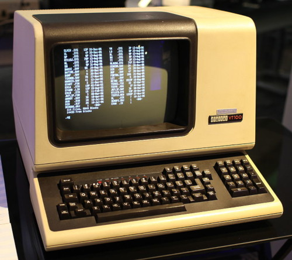
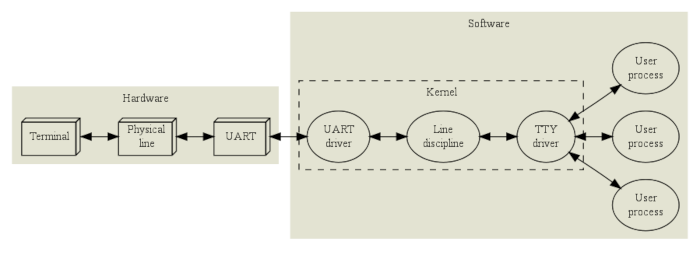
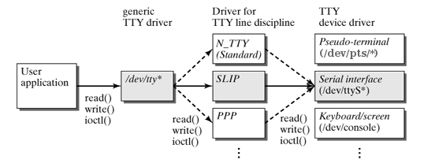
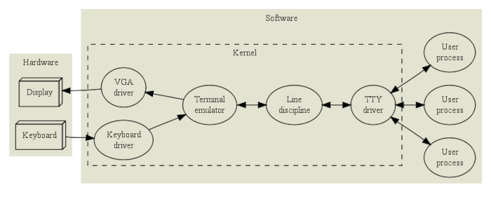
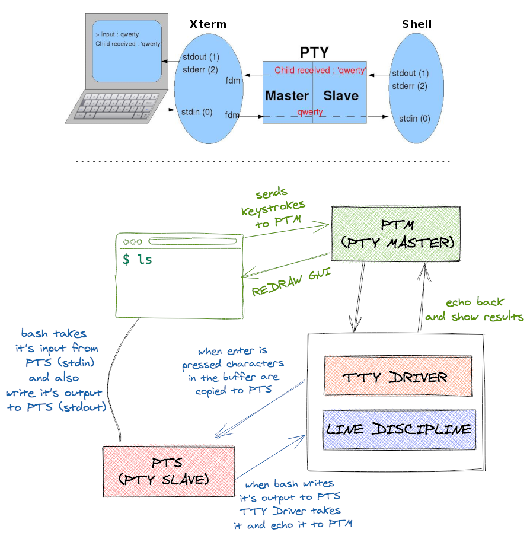
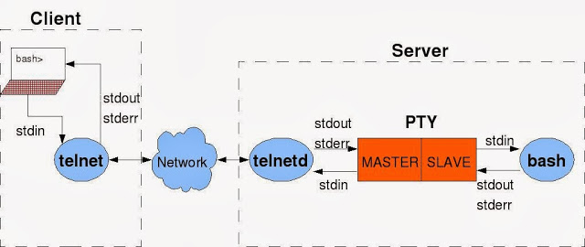
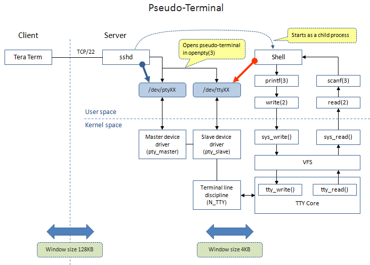
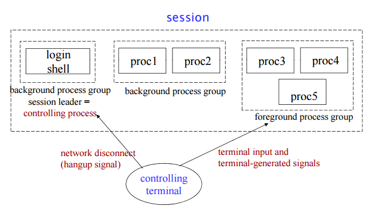
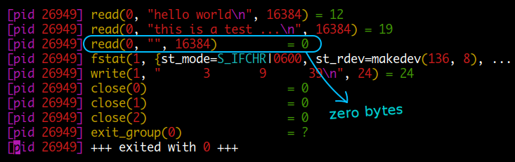
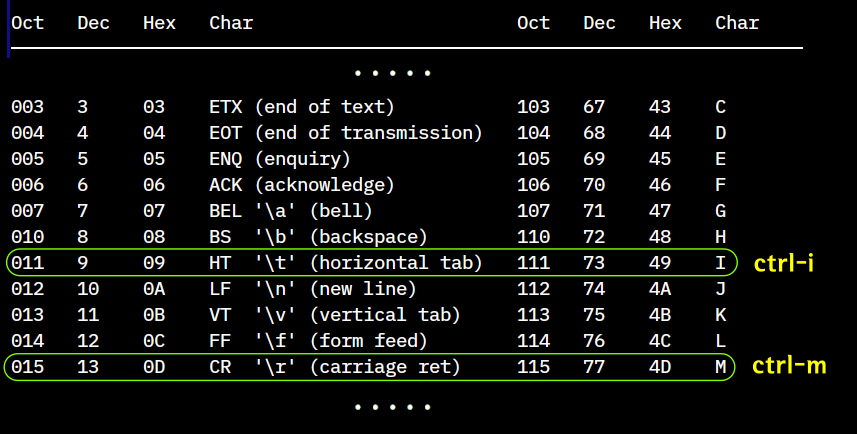

TTY
컴퓨터는 기본적으로 연산을 위한 입력장치와 출력장치를 가집니다. 지금은 기술이 좋아져서 노트북같은 경우 연산장치, 디스플레이 출력장치, 키보드 입력장치가 모두 같이 있지만 초기에는 대형 연산장치가 큰 방 하나를 가득 채우고 있었고 입, 출력장치는 따로 분리되어 운영되었습니다
리눅스의 /dev 디렉토리에서 볼수있는 /dev/tty*, /dev/pts/* 파일들이 입, 출력에 관련된 파일들이며 외부 터미널 장치를 연결할때, 리눅스에서 가상콘솔을 제공할때, xterm 이나 gnome-terminal 같은 터미널 emulation 프로그램, telnet, ssh 같은 리모트 로그인 프로그램등에 의해 사용됩니다.
입, 출력 장치의 변천 과정을 살펴보면 초기에는 punch card 를 입,출력에 사용하였습니다. 아래 그림의 펀치카드 뭉치가 하나의 프로그램 입니다. 저걸 오퍼레이터가 직접 컴퓨터 메모리에 로드해서 실행시키고 실행이 완료되면 메모리 덤프를 했습니다. 이 과정을 사람이 직접 반복하다가 프로그램에 의해 자동화 하기 시작한것이 Operating System 의 시작이라고 합니다.
간단한 작업도 어셈블리어로 프로그래밍을 하다가 최초로 컴파일러를 이용하는 고급언어를 만든 것이 IBM Mathematical FORmula TRANslating System: FORTRAN 입니다. ( 이것이 포트란 문법이 현대 언어에 비해 많이 달라 보이는 이유입니다.) 포트란은 초기에 펀치카드로 작성하였기 때문에 FORTRAN 77 까지만 해도 프로그램을 작성할 때 앞에 6 컬럼을 띄우지 않으면 오류가 발생합니다. 펀치카드는 80 컬럼을 가지고 있는데 이것은 요즘에도 코드작성 규칙에 사용되기도 합니다. 펀치카드는 프로그램 순서대로 정리되어 있는 것이기 때문에 만약에 들고 가다가 떨어뜨리기라도 하면 다시 순서대로 정리해야 했습니다.
The IBM 1401 compiles and runs FORTRAN II
Teletypewriter 는 입력으로 키보드와 출력으로 라인프린터를 가지고 있으며 통신회선이 연결되어있습니다. 문자를 치면 자동적으로 전신 부호로 번역되어 송신되고, 수신측에서는 반대로 수신된 전신 부호가 문자로 번역되어 출력됩니다. 컴퓨터에 연결되어 입,출력에 사용되기도 하였으며 command line interface 의 원조라고 할수있습니다. 리눅스의 /dev 디렉토리에서 볼수있는 tty 파일의 이름은 이 TeleTYpe 에서 유래한 것입니다.
| Teletype Corporation 사 의 teletype model 33 |
2차대전 당시 teletypewriter 앞에서 작업하고 있는 오퍼레이터 |
출력에 사용되던 라인프린터가 CRT 모니터로 바뀌었습니다. 입, 출력을 위한 키보드와 디스플레이만으로 구성된 dumb terminal 입니다 (cpu, ram, disk 같은것은 들어있지 않습니다). 이때는 ethernet 같은 컴퓨터 네트워크가 생기기 전이라 메인프레임에 시리얼라인으로 터미널이 연결되어 사용되었습니다.
|  | |
| DEC VT100 terminal |
입, 출력 장치 사용의 구분
1. 외부 터미널 장치 연결

http://www.linusakesson.net/programming/tty/
위의 VT100 같은 외부 터미널 장치가 시리얼라인을 통해 연결되는 경우입니다.
getty 프로세스가 백그라운드에서 라인을 모니터링 하고있다가 터미널에서 접속을하면 login prompt 를 보여줍니다.
/dev/ttyS[번호] 파일이 사용됩니다.
- UART driver
물리적으로 bytes 를 전송하는 역할을하며 parity checks 이나 flow control 을 수행합니다.
- Line discipline
low level 장치드라이버 위에 line discipline 이라는 레이어를 하나 더 두면 같은 장치를 여러가지 용도로 사용할 수가 있습니다. 종단은 같은 /dev/ttyS* 시리얼 장치 라고해도 PPP line discipline 을 사용하면 PPP 패킷을 처리할 수 있고 SLIP line discipline 을 사용하면 SLIP 패킷을 처리할 수 있습니다.
여기서 discipline 은 입력된 데이터가 처리되는 방식 정도로 해석하면 되겠습니다.
터미널에서 텍스트를 입력할때 한번에 오류 없이 입력할 수 없으므로 baskspace, erase word, clear line, reprint 같은 line editing 기능을 standard line discipline 을 통해 제공합니다. (readline 이나 curses 같은 고급 기능을 제공하는 프로그램은 raw mode 를 통해서 직접 모든기능을 제어합니다.)

- TTY driver
Session management 기능, 다시말해서 job control 과 관련된 기능을 제공합니다. Ctrl-z 를 누르면 실행중인 job 을 suspend 시키고, Ctrl-c 를 누르면 종료시키고, 사용자 입력은 foreground job 에만 전달되게 하고, background job 이 입력받기를 하면 SIGTTIN 신호를 보내 suspend 시키는 등은 모두 TTY driver 에서 제공하는 기능입니다.
UART driver, Line discipline, TTY driver 를 합쳐서 TTY device 라고 합니다.
2. 리눅스 virtual console

http://www.linusakesson.net/programming/tty/
Ctrl-Alt-F1 ~ F6 키조합으로 사용할수있는 OS 에서 제공하는 가상콘솔 입니다.
실제 물리적인 장치가 연결된것이 아니기 때문에 커널에서 터미널을 emulation 합니다.
Line discipline, TTY driver 의 기능은 위와같고 마찬가지로 백그라운드 getty 프로세스에의해
login prompt 가 제공됩니다. /dev/tty[번호] 파일이 사용됩니다.
3. Pseudo TTY ( xterm, gnome-terminal, telnet, ssh ... )

http://www.linusakesson.net/programming/tty/
앞서 virtual console 에서는 커널에서 터미널을 emulation 했다면, TTY driver 가 제공하는 session management 기능과 line discipline 을 그대로 사용하면서 사용자 프로그램에서 터미널을 emulation 하는것이 PTY ( Pseudo TTY ) 입니다.
PTY 는 master/slave pair 로 이루어지는데 /dev/ptmx (pseudo-terminal master multiplexer)
파일을 open 하면 pseudo terminal master (PTM) 에 해당하는 file descriptor 가 반환되고
pseudo terminal slave (PTS) 에 해당하는 device 가 /dev/pts/ 디렉토리에 생성됩니다.
( 터미널에서 cat /dev/ptmx 명령을 실행해도 /dev/pts/ 에 생성되는 것을 볼 수 있습니다.)
일단 두 ptm 과 pts 가 open 되면 /dev/pts/[번호] 는 실제 터미널과 같은 인터페이스를 프로세스에 제공합니다.
xterm 이나 gnome-terminal 같은 터미널을 예로 들면 xterm 이 ptm 에 연결되고 어플리케이션 프로세스 (예를 들면 bash) 가 pts 에 연결되는 구조입니다. xterm 에서 사용자가 입력을 하면 ptm -> 커널의 line discipline -> pts 를 거쳐 bash 프로세스에 전달되고, 명령 실행 결과는 다시 pts -> line discipline -> ptm 를 거쳐 xterm 에 전달되면 xterm 은 실제 터미널과 같이 화면에 표시하게 됩니다. 그러니까 이것도 일종의 두 프로세스 간의 IPC (Inter Process Communication) 입니다. 단지 중간에 커널의 tty driver, line discipline 이 있는다는게 다릅니다.

https://yakout.io/blog/terminal-under-the-hood
현재 Pseudo TTY 를 사용중인 프로세스는 다음 명령으로 확인할 수 있습니다.
$ fuser -v /dev/ptmx
USER PID ACCESS COMMAND
/dev/ptmx: mug896 1832 F.... kded5
mug896 1970 F.... yakuake
mug896 2039 F.... konsole
mug896 3825 f.... firefox-bin
아래 그림은 telnet 또는 ssh 의 경우인데 telnet 명령의 stdin, stdout, stderr 는 모두 터미널에 연결되어 있으므로 터미널에서 ls 명령을 실행하면 telnet 명령의 입력으로 들어가고 네트웍을 거쳐 telnetd 에 전달되면 ptm, pts 를 거쳐 bash 프로세스에 전달됩니다. 명령의 실행결과는 다시 pts, ptm 을 거쳐서 telnetd 에 전달되고 네트웍을 거쳐 telnet 명령에 전달되면 터미널로 출력하게 됩니다.
( 터미널 프로그램을 실행하거나 외부에서 ssh client 가 접속하면 /dev/pts/ 디렉토리에 device 파일이 새로 생성되는 것을 볼 수 있습니다. )

http://rachid.koucha.free.fr/tech_corner/pty_pdip.html

Console & TTY Driver : http://jake.dothome.co.kr/tty/
Controlling Terminal

controlling terminal 은 session leader 에 의해 할당되며 이것은 보통
/dev/tty*나/dev/pts/*와 같은 터미널 device 를 말합니다.PID 와 SID 가 같은 프로세스를 session leader 라고 하는데 오직 session leader 만이 controlling terminal 을 획득할 수 있습니다. session leader 를 controlling process 라고도 합니다.
하나의 session 은 하나의 controlling terminal 만 가질 수 있습니다.
세션은 하나의 foreground process group 과 여러개의 background process groups 로 구성됩니다.
Ctrl-c 를 누르면 SIGINT 신호가 foreground process group 에 전달됩니다.
modem (or network) 연결이 끊기면 SIGHUP 신호가 session leader 에 전달되고 session leader 는 같은 SID 를 갖는 프로세스들에게 전달합니다.
ps x명령을 실행하였을때 두번째 TTY 컬럼에 나오는 내용이 controlling terminal (ctty) 입니다. ctty 를 갖지 않는 프로세스는?로 표시 됩니다.
ps 명령은 기본적으로 내 pid 만, 그리고 tty 를 갖는 프로세스만 표시합니다. 이때 tty 를 갖지 않는 프로세스도 표시하는 것이
x옵션이고 나 이외 다른 사용자도 표시하는 것이a옵션입니다. 그러므로ps ax명령은 시스템내 모든 사용자의 모든 프로세스를 표시합니다.

/dev/tty
/dev/tty 는 특수 파일로 프로세스의 controlling terminal 과 동일합니다.
다시말해 현재 ctty 가 /dev/pts/12 이라면 /dev/tty 도 /dev/pts/12 와 같다고 할 수 있습니다.
어떤 프로세스가 /dev/tty 를 open 하는데 실패하였다면 ctty 를 갖고있지 않다고 할 수 있습니다.
standard streams 이 모두 redirect 되어있다고 하더라도 /dev/tty 로 출력하면 터미널로 출력할 수 있고
또한 /dev/tty 를 이용해 터미널로부터 입력을 받을 수 있습니다.
# vi 의 stdin 은 /dev/tty 가 되고 <(cat) 로 부터 내용을 읽어들인다.
# 이때 파이프는 cat 명령과 연결되므로 vi 의 내용은 hello world 가 된다.
$ echo hello world | vi < /dev/tty <(cat)
한가지 주의할 점은 /dev/tty 로의 출력은 standard streams 을 거치지 않고 직접 터미널 장치에 쓰기 때문에 메시지를 잡아서 redirect 할 수 없습니다.
# /dev/tty 로의 출력은 redirect 할수없다.
$ { echo hello > /dev/tty ;} > /dev/null
hello
$ { echo hello > /dev/tty ;} 2> /dev/null
hello
# 따라서 다음과 같이 파일로 저장할 수도 없습니다.
$ cat test.sh
echo hello > /dev/tty
------------------------------
$ ./test.sh > out # stdout
hello
$ ./test.sh 2> out # stderr
hello
Configuring TTY device
tty 명령으로 현재 shell 의 tty device 를 조회할수 있고, stty 명령을 이용해 설정값을 변경할수 있습니다.
$ tty
/dev/pts/1
$ stty -a
speed 38400 baud; rows 13; columns 93; line = 0;
intr = ^C; quit = ^\; erase = ^?; kill = ^U; eof = ^D; eol = M-^?; eol2 = M-^?; swtch = M-^?;
start = ^Q; stop = ^S; susp = ^Z; rprnt = ^R; werase = ^W; lnext = ^V; flush = ^O;
min = 1; time = 0;
-parenb -parodd -cmspar cs8 hupcl -cstopb cread -clocal -crtscts
-ignbrk brkint -ignpar -parmrk -inpck -istrip -inlcr -igncr icrnl ixon -ixoff -iuclc ixany
imaxbel iutf8
opost -olcuc -ocrnl onlcr -onocr -onlret -ofill -ofdel nl0 cr0 tab0 bs0 vt0 ff0
isig icanon iexten echo echoe echok -echonl -noflsh -xcase -tostop -echoprt echoctl echoke
위에서 출력된 설정값들을 보면 UART parameters, line discipline, TTY driver 에 해당되는 값들이 모두 섞여 있습니다. 가령 첫 번째 라인의 speed 값은 UART parameters 에 해당되는 값인데 pseudo terminal 에서는 필요가 없으므로 무시됩니다. 다음의 rows, columns 값은 TTY driver 에 해당되는 값으로 터미널 프로그램의 윈도우 사이즈를 조절하면 값이 변경되고 TTY driver 는 foreground job 에 SIGWINCH 신호를 보내게 됩니다. line 은 line discipline 값으로 0 은 line editing 을 제공하는 standard line discipline 에 해당됩니다.
이어지는 설정값들을 몇 가지 살펴보면 다음줄의 intr = ^C 는 인터럽트 키를 Ctrl-c 로 설정합니다.
단어 앞에 - 가 붙은 것은 switch off 상태를 나타냅니다.
icanon 은 line discipline 에 해당하는 값으로 canonical 모드를 활성화합니다.
canonical 모드는 line-based 모드를 말하는 것으로 명령문을 작성할 때 backspace 로 수정할 수도 있고
enter 를 치면 라인 단위로 데이터가 전달되는 것을 말합니다.
stty -icanon 명령으로 off 상태로 변경하여 non-canonical 모드로 설정하고
cat [enter] 한 후에 타이핑을 해보면 backspace 키도 작동하지 않고
라인 단위로 프린트되는 대신에 문자 단위로 프린트되는 것을 볼 수 있습니다.
vi 에디터에서 키를 하나 누르면 바로 반응하는데 non-canonical mode 를 이용하는 것입니다.
프롬프트에서 문자를 타입 할 때 타입한 문자가 보이는것도 line discipline 의 echo 옵션에 해당합니다.
그러므로 echo 값을 stty -echo 로 변경하면 echo 가 되지 않아 보이지 않게 됩니다.
job control 에 관련된 tostop 은 background job 에서 출력이 발생할 시에 suspend 할지를
결정합니다. 현재는 off 상태이기 때문에 다른 프로세스의 출력과 겹치던 상관없이 터미널에 출력이 되지만
stty tostop 으로 on 설정을 해주면 출력이 발생할 시에 suspend 시킬 수 있습니다.
각 항목에 대한 설명은 man 페이지나, info 페이지를 통해 조회해볼 수 있습니다.
다음은 tty 설정을 변경하여 소문자 입력을 대문자로 표시해줍니다.
#!/bin/bash
stty -icanon -echo
while :; do
keypress=$(head -c1) # 또는 keypress=$(dd bs=1 count=1 2> /dev/null)
printf %b '\'$( printf %o $(( $(printf %d "'$keypress") - 32 )) )
done
..........................................................................
$ ./test.sh
SWQDHWUQIHDUEIDUDGIQWGUIQWIEYWY # Ctrl-c 종료
stty 명령으로 터미널 설정을 변경해 사용할 때 한 가지 주의할 점은 위와 같이 Ctrl-c 에의해 스크립트가 비정상 종료될 경우 bash 의 경우는 터미널이 자동으로 이전 상태로 복구되지만 그렇지 않고 정상 종료될 경우는 자동으로 복구되지 않습니다. 다음 스크립트 실행해보면 실행 후에는 터미널이 이전과 같이 동작하지 않는 것을 확인할 수 있습니다.
#!/bin/bash
stty -icanon -echo
keypress=$(head -c1)
printf %b '\'$( printf %o $(( $(printf %d "'$keypress") - 32 )) )
따라서 정상 종료를 위해서는 다음과 같이 현재 터미널 설정의 백업과 복구가 이루어져야 합니다.
#!/bin/bash
otty=`stty -g` # 현재 터미널 설정 백업
stty -icanon -echo
keypress=$(head -c1)
printf %b '\'$( printf %o $(( $(printf %d "'$keypress") - 32 )) )
stty $otty # 복구
만약에 위와 같은 스크립트를 shell 함수로 만들어서 prompt 상에서 실행한다면 Ctrl-c 로 종료한다고 해도 이전 상태로 터미널이 복구되지 않습니다. 이때는 non-canonical 모드인 raw 모드를 사용하면 Ctrl-c, Ctrl-z 같은 문자들이 처리되지 않고 그대로 프로그램에 전달되므로 스크립트 내에서 직접 Ctrl-c 문자를 컨트롤할 수 있습니다.
raw 모드는 다음과 같은 것입니다.
-ignbrk -brkint -ignpar -parmrk -inpck -istrip -inlcr -igncr -icrnl
-ixon -ixoff -icanon -opost -isig -iuclc -ixany -imaxbel -xcase min 1 time 0
upper () {
otty=`stty -g` # 현재 터미널 설정 백업
stty raw -echo # raw 모드 사용
while :; do
keypress=$(head -c1)
# 사용자가 Ctrl-c 를 누를경우 백업을 복구하고 return 합니다.
[ "$keypress" = $(echo -en "\003") ] && { stty $otty; return ;}
printf %b '\'$( printf %o $(( $(printf %d "'$keypress") - 32 )) )
done
}
다음은 활용하여 사용자에게 비밀번호를 입력받는 것입니다.
비밀번호는 숫자로만 제한을 하고 입력시에는 보이지 않게 * 문자로 표시합니다.
#!/bin/sh
echo -n "Password (5 digits): "
otty=`stty -g` # 백업
stty -icanon -echo
total=5
while :; do
keypress=$(head -c1)
if expr + "$keypress" : "[0-9]" > /dev/null
then
result=${result}${keypress}
echo -n '* '
test $((total -= 1)) = 0 && break
fi
done
stty $otty # 복구
echo "\nYou entered : $result"
다음은 bash 의 read -n1 var 명령과 같이 enter 를 누르지 않아도
입력한 문자가 전달되어 처리됩니다.
read 명령에서 -n 옵션을 사용할 수 없는 sh 에서는 이 방법을 사용하면 됩니다.
#!/bin/sh
otty=`stty -g` # 백업
stty -icanon
echo -n "Are you sure (Y/N)? "
keypress=$(head -c1)
stty $otty # 복구
echo
case $keypress in
[Yy]) echo yes ;;
[Nn]) echo no ;;
esac
reset 명령
프로그램이 비정상 종료하여 터미널 설정이 정상적으로 복구되지 않았을 경우에는 reset 명령을 이용하여 초기화할 수 있습니다. reset 명령은 다음과 같은 역할을 수행합니다.
- Set Cooked and Echo modes to on
- Turn off cbreak and Raw modes
- Turn on new-line translation
- Restore special characters to a sensible state.
Any special character that is found to be NULL or -1 is reset to its default value.
# 터미널 설정을 초기화하기 위해 다음과 같이 입력하면 됩니다.
# 입력시 carriage-return 이나 echo 기능이 동작하지 않을 수 있으므로
# 이때는 line-feed 문자 Ctrl-J 를 사용합니다.
sh$ <LF>reset<LF>
Control Keys
^ 기호는 컨트롤 키를 의미 합니다.
| Ctrl 키 | 설명 |
|---|---|
| ^M | 엔터키에 해당 |
| ^C (intr) | forground job 에 SIGINT 신호를 보내 종료시킵니다. |
| ^D (eof) | cat, wc 같은 명령에서 직접 키보드로부터 입력을 받을때 입력의 끝( End Of File )을 나타낼때 사용합니다. ( master side 에서 처리되는 것으로 signal 이 아닙니다 ) |
| ^\ (quit) | forground job 에 SIGQUIT 신호를 보내 종료시키고 core dump 합니다. ( ^C 로 종료되지 않을경우 사용할 수 있습니다. ) |
| ^S (stop) | 화면 출력 정지 |
| ^Q (start) | 화면 출력 다시 시작 |
| DEL or ^? (erase) | 마지막 문자 삭제 |
| ^U | 전체 명령행 삭제 (왼쪽 방향으로) |
| ^Z (susp) | forground job 에 SIGTSTP 신호를 보내 suspend 시킵니다. |
End Of File
파일이나 파이프 또는 터미널에서 데이터를 읽어 들일 때 어떻게 파일의 끝을 알 수 있을까요?
getc 같은 C 라이브러리 함수는 파일의 끝에 도달하면 EOF( -1 ) 을 리턴하는데 어떻게 파일의 끝에 도달한지 알 수 있을까요?
C 스트링처럼 NUL 문자를 파일의 끝으로 할까요?
만약에 NUL 문자를 파일의 끝으로 한다면 NUL 문자가 포함되는 binary 파일은 제대로 읽을 수가 없죠. 따라서 파일의 끝을 나타낼 때는 특정 문자를 사용하지 않고 read 시스템 콜 함수를 이용해 판단합니다. read 함수는 실행 결과로 읽어들인 바이트 수를 반환하는데요. 이때 zero 를 반환하게 되면 파일의 끝으로 간주합니다.
그럼 read 함수는 어떻게 파일의 끝을 알고 zero 를 반환할 수 있을까요? 파일의 경우는 사이즈 정보가 있으니까 문제가 되지 않는다고 하면 파이프나 터미널같이 stream 의 경우는 어떻게 알 수 있을까요?
파이프의 경우는 파이프에 연결된 상대방이 파이프를 close 하거나 exit 하게 되면 read 했을 때 zero 바이트가 반환됩니다. 이것은 tcp socket 도 마찬가지입니다. 터미널에서는 ctrl-d 가 이 역할을 합니다. 가령 wc 명령을 실행한 후에 데이터 입력중에 ctrl-d 를 누르게 되면 wc 명령에서 실행중인 read 함수가 zero 바이트를 읽게 되고 파일의 끝으로 간주하게 됩니다.
다음은 터미널에서 wc 명령 실행 중에 ctrl-d 를 입력한 것을 strace 한 것입니다.

터미널에서 python 이나 node 프로그램을 실행하면 해당 shell 로 진입이 되는데요. 이때도 종료를 위해
quit()이나.exit을 실행하지 않아도ctrl-d를 누르면 바로 프로그램이 종료됩니다.
fread() , fwrite() 함수와 달리 저수준 함수인 read() , write() 은
따로 feof() 함수가 없습니다.
read() 했을때 0 bytes 이 반환되면 그게 파일의 끝이 됩니다.
$ gcc -xc - <<\@ && ./a.out
#include <unistd.h>
#include <fcntl.h>
#include <stdio.h>
char buf[10];
int main () {
int fd = open("/etc/hosts", O_RDONLY);
ssize_t rbytes;
while (0 != (rbytes = read(fd, buf, 10))) // '0' bytes 이 반환되면 파일의 끝이된다.
write(STDOUT_FILENO, buf, rbytes);
}
@
127.0.0.1 localhost
127.0.1.1 EliteBook
. . .
half-close 를 이용해 파일을 전송하고 메시지를 수신하는 socket [ 예제 ]
Race Condition
다음은 하나의 터미널에서 두개의 프로세스가 각각 stdout, stderr 로 출력하는 경우입니다. echo, date 명령으로 구성된 첫번째 명령그룹은 새로 프로세스를 생성하여 stdout 으로 출력을 하고 있고 이어지는 두번째 명령그룹은 스트링을 빨간색으로 만들어주는 color escape 코드를 stderr 로 출력하고 있습니다. 각각 stdout, stderr 로 출력을 하고 있으니 첫번째 명령그룹의 출력이 빨간색으로 나올일은 없을까요?
f1() {
{ echo 111; date; echo 222 ;} & # background process 를 만들어 실행
{ echo -en "\e[31m"; sleep 1; echo -en "\e[m";} >&2
}
위의 f1 함수를 실행해 보면 첫번째 명령그룹의 출력이 빨간색으로 나옵니다.
다시말해 stdout, stderr 구분 없이 명령의 실행 순서가
echo -en "\e[31m"; echo 111; date; echo 222; echo -en "\e[m"; 와 같이 되어
terminal device 로 출력되는 것과 같습니다.
두 개의 프로세스가 동시에 하나의 파일이나, 파이프에 쓰기를 한다면 쓰여지는 데이터의 순서를 예측할 수 없습니다. 위의 경우도 두 개의 프로세스가 동시에 하나의 device 파일에 쓰기를 하여 race condition 이 일어나는 상황입니다.
SIGHUP 신호
SIGHUP (hangup) 신호는 터미널이 없어졌음을 의미합니다. 터미널이 존재하지 않으면 명령을 입력할 수도, 결과를 출력할 수도 없으므로 remote login 에서 넷트웍, 모뎀 연결이 끊기거나 또는 사용자가 터미널 프로그램을 종료시키면 shell 에 SIGHUP 신호가 전달됩니다. interactive shell 이 SIGHUP 신호를 받으면 모든 stopped, running job 들에게도 SIGHUP 신호를 보내 같이 종료하게 됩니다.
script 명령을 이용해 출력을 저장하기
명령 실행시 출력을 파일로 저장하려 할 경우 따로 redirection 을 설정할 필요 없이
script 명령을 이용해 간단히 저장할 수 있습니다.
# 먼저 다음과 같이 alias 를 설정합니다.
$ alias script='TERM=screen-256color script'
# < 명령 실행 결과를 파일로 저장 >
1. script 명령 실행
2 출력을 저장할 명령들을 실행
3. exit 으로 종료
4. less -r typescript 로 저장 내용 조회
# < 저장 결과를 재생하기 >
1. script -ttime.log 옵션으로 실행 (주의: -t 옵션과 파일 이름 사이에 공백이 있으면 안됨)
2 출력을 저장할 명령들을 실행
3. exit 으로 종료
4. scriptreplay -t time.log 명령으로 재생
출력을 파일로 저장하는 것 외에 인터넷을 통해 다른 컴퓨터로 전송할 수도 있습니다.
다음과 같이 설정하면 script 명령을 실행하는 computer 2 의 출력이 그대로
computer 1 의 터미널에 보이게 됩니다.
# 수신용 터미널 사이즈가 rows 15 cols 80 일 경우 송신용 터미널에서는 script 명령 실행전에
# 먼저 stty rows 15 cols 80 명령으로 사이즈를 맞추어야 제대로 표시됩니다.
# computer 1 터미널 (수신용) # 먼저 실행
$ nc -l 8080
# computer 2 터미널 (송신용)
# 프로세스치환 >( ... ) 의 파이프와 cat 명령의 stdin 이 연결되어 /dev/tcp/... 로 출력됩니다.
$ script -f >( cat > /dev/tcp/12.34.56.78/8080 )
다음과 같이 명령을 실행해도 script 명령과 비슷한 결과를 얻을 수 있는데 이 방법은 stdout, stderr 가 파이프로 연결되기 때문에 터미널에 연결되어 있어야 정상적으로 실행되는 명령에서는 제대로 동작하지 않습니다.
$ mkfifo fifo && { tee < fifo term.log & exec &> fifo ; rm -f fifo ;}
$ ls -l /dev/fd/
total 0
lrwx------ 1 mug896 mug896 64 2020-09-20 21:18 0 -> /dev/pts/12
l-wx------ 1 mug896 mug896 64 2020-09-20 21:18 1 -> /home/mug896/tmp4/fifo (deleted)
l-wx------ 1 mug896 mug896 64 2020-09-20 21:18 2 -> /home/mug896/tmp4/fifo (deleted)
lrwx------ 1 mug896 mug896 64 2020-09-20 21:18 21 -> /dev/dri/card0
lr-x------ 1 mug896 mug896 64 2020-09-20 21:18 3 -> /proc/90927/fd/
$ exec 1>&0 2>&0
[1]+ Done
$ clear
$ less term.log # 위의 ls -l /dev/fd/ 와 동일한 내용이 출력된다.
. . .
tty-share 명령
하나의 터미널을 복수의 사용자가 local 또는 remote 에서 실시간으로 share 할 수 있습니다. 입력도 서로 동시에 가능하고 출력도 공유가 됩니다.
https://github.com/elisescu/tty-share
$TERM 변수
사용 중인 터미널 타입을 설정할 때 사용되는 변수입니다.
많은 프로그램들이 $TERM 변수와 /usr/lib/terminfo/* 를 참조해서
커서를 움직이거나 clear screen 등을 할때 어떤 스트링을 사용할지,
또는 사용자가 backspace key, function keys 등을 누를 때 전달되는 스트링을 판단합니다.
# 설정에 사용할 수 있는 값들은 다음 명령으로 조회해볼 수 있습니다.
$ toe -a
Quiz
터미널에서 space 는 입력이 되지만 tab 키는 입력이 안되죠. 아래 echo 명령을 보면 \x09 탭 문자를 사용하지도 않았는데 tab 문자가 입력된 것을 볼 수 있습니다. 어떻게 입력하였을까요?
$ echo "AA BB" | od -a
0000000 A A ht ht B B nl # ht 는 horizontal tab
0000007
터미널에서는 quote command character 라고 해서 ctrl-v 를 입력하면 이후에
tab, esc, ctrl-d, ctrl-c 같은 직접 입력이 안되는 문자를 입력할 수 있습니다.
이와 같이 모양이 없는 문자를 control 문자라고 하는데 ascii-table 에서 보면 1 ~ 32 번 까지가 control 문자입니다.
초기 telecommunication 시절에는 이와 같은 문자 입력을 ctrl 키를 이용해서 했습니다.
ctrl-i 를 입력하면 tab, ctrl-j 는 line feed, ctrl-m 은 carriage return, ctrl-[ 는 escape 등등 ...
이후에 enter, tab, backspace 와 같이 자주 사용되는 문자는 키보드에 전용 키가 생기게 됩니다.

2.
특정 터미널에서 실행되고 있는 프로세스들을 출력하려면 어떻게 할까요?
다음과 같이 ps 명령의 -t 옵션을 사용하거나
pgrep or lsof 명령을 이용하면 해당 터미널에 실행중인 PID 를 구할 수 있습니다.
# terminal 1
$ tty
/dev/pts/14
$ join <(sleep 10) <(sleep 10)
# terminal 2
$ ps jf -t pts/14
PPID PID PGID SID TTY TPGID STAT UID COMMAND
2441 4655 4655 4655 pts/14 20354 Ss 1000 /bin/bash
4655 20351 4655 4655 pts/14 20354 S 1000 \_ /bin/bash
20351 20353 4655 4655 pts/14 20354 S 1000 | \_ sleep 10
4655 20352 4655 4655 pts/14 20354 S 1000 \_ /bin/bash
20352 20355 4655 4655 pts/14 20354 S 1000 | \_ sleep 10
4655 20354 20354 4655 pts/14 20354 S+ 1000 \_ join /dev/fd/63 /dev/fd/62
# 또는
$ ps jf `pgrep -t pts/14`
$ ps jf `lsof -t /dev/pts/14`
3.
현재 터미널의 columns, rows 크기 값은 어떻게 구할 수 있을까요?
1 . 현재 프롬프트 상이라면 $COLUMNS $LINES 환경변수를 이용할 수 있습니다.
$ echo $COLUMNS $LINES
92 19
# 터미널창에서 다음과 같이 trap 설정을 한 후 창 크기를 조절해보면 값이 변경되는 것을 볼 수 있습니다.
$ trap 'echo $COLUMNS $LINES' WINCH
67 12
68 13
69 13
70 13
. . .
2 . 스크립트 파일 실행 시에는 tput, stty 명령을 이용할 수 있습니다.
( $COLUMNS $LINES 변수는 값이 표시되지 않습니다. )
$ tput cols
92
$ tput lines
19
$ stty size
19 92
$ read rows cols < <(stty size)
3 . 현재 설정값을 변경하려면 다음과 같이 하면 됩니다.
$ stty rows 15 cols 80
$ stty cols 80
4.
vi 에디터에서는 기본적으로 - ( stdin ) 옵션을 사용해서 파이프로부터 데이터를
읽어들일 수 있는데요.
emacs 에디터에서는 어떻게 할 수 있을까요?
$ ls | vi - # vi 는 정상적으로 실행된다.
$ ls | emacs - # emacs 는 오류 발생
emacs: standard input is not a tty
--------------------------------------------
# redirection 을 이용해 /dev/tty 를 stdin 에 연결해 줍니다.
# 파이프와 cat 명령의 stdin 이 연결되어 --insert 에 사용됩니다.
$ ls | emacs < /dev/tty --insert <(cat)
$ alias emacs-="emacs < /dev/tty --insert <(cat) -f fundamental-mode"
$ ls | emacs-
5 .
Ctrl-l 과 같이 터미널 화면을 clear 하면서 scrollback buffer 까지 모두 삭제하려면 어떻게 할까요?
$ clear # 방법1 : clear 는 builtin 명령이 아니고 외부 명령입니다.
$ tput clear # 방법2
................................................
# clear 명령은 $TERM 값을 참고하여 화면을 어떻게 clear 할지 terminfo database 를 조회합니다.
# 직접 명령을 실행하는것 외에 다음과 같이 stdout 출력을 변수에 저장해 사용할 수 있습니다.
$ clear=$( clear )
$ echo "$clear"
$ echo -n "$clear" | od -tax1
0000000 esc [ H esc [ 2 J esc [ 3 J
1b 5b 48 1b 5b 32 4a 1b 5b 33 4a
6 .
C 언어에서 feof() 함수를 사용할 때 잘못된 사용법
$ gcc -xc - <<\@ && ./a.out <<< hello | od -tax1
#include <stdio.h>
int main()
{
while (!feof(stdin)) { // 잘못된 사용법
int ch = getchar();
printf("%c", ch);
}
return 0;
}
@
0000000 h e l l o nl del <---- 마지막에 문자가 하나 더 추가된다.
68 65 6c 6c 6f 0a ff
------------------------------------------------
$ gcc -xc - <<\@ && ./a.out <<< hello | od -tax1
#include <stdio.h>
int main()
{
while (1) { // 올바른 사용법
int ch = getchar(); // getchar() 함수가 실패한 후에야
if (feof(stdin)) break; // feof() 가 true 가 된다.
printf("%c", ch);
}
return 0;
}
@
0000000 h e l l o nl
68 65 6c 6c 6f 0a
$ gcc -xc - <<\@ && ./a.out <<< hello | od -tax1
#include <stdio.h>
int main()
{
int ch;
while ((ch = getchar()) && ! feof(stdin)) { # OK
printf("%c", ch);
}
return 0;
}
@
0000000 h e l l o nl
68 65 6c 6c 6f 0a
$ gcc -xc - <<\@ && ./a.out <<< hello | od -tax1
#include <stdio.h>
int main()
{
int ch;
while ((ch = getchar()) != EOF) { # OK
printf("%c", ch);
}
return 0;
}
@
0000000 h e l l o nl
68 65 6c 6c 6f 0a
확장 ASCII 테이블을 보면 1 byte 크기의 0x0 ~ 0xff 까지 모두 값이 있기때문에
getchar(),getc(),fgetc()같은 함수들은 내부적으로 unsigned char 로 값을 얻어낸뒤에 int 로 형변환을 하여 반환합니다. 이와같이 하는이유는 파일의 끝에 도달했을때 반환하는EOF매크로 값이-1인데 이것은 0xff 아스키 값과 중복이 되므로 int 로 형변환을 하여 반환하면 모든 아스키 값과 EOF (0xffffffff) 을 구분할수 있게됩니다.